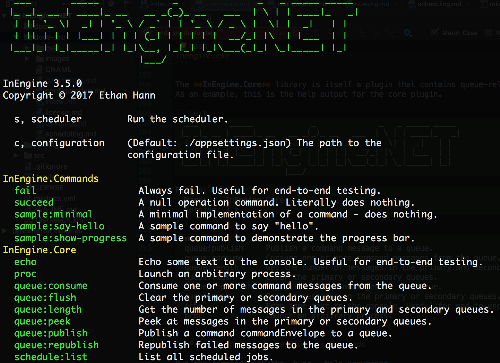

Commands¶
Commands can be C# classes, lambda expressions, or CLI programs. They can be queued, scheduled, or from the command line.
Create a Command¶
The InEngine.Core package is required to create a C# class command. Install it in a Visual Studio project.
Package Manager
Install-Package InEngine.Core
Nuget CLI
nuget install InEgine.Core
.NET CLI
dotnet add package InEngine.Core
Paket CLI
paket add InEngine.Core
To create a class command, extend the InEngine.Core.AbstractCommand class. Minimally, the Run method should be overridden.
using System; using InEngine.Core; namespace MyCommandPlugin { public class MyCommand : AbstractCommand { public override void Run() { Console.WriteLine("Hello, world!"); } } }
Run a Command¶
Create a class that extends InEngine.Core.AbstractPlugin in the same assembly as the command class. Add a VerbOptions attribute, from the CommandLine namespace, that defines the name of the command.
using CommandLine; using CommandLine.Text; using InEngine.Core; namespace MyCommandPlugin { public class MyPlugin : AbstractPlugin { [VerbOption("my-command", HelpText="My example command.")] public MyCommand MyCommand { get; set; } } }
Download the InEngine binary distribution, from the GitHub Releases page, that matches the version of the InEngine.Core package you included.
Copy your project's DLLs into the Plugins subdirectory included in the binary distribution. Add your plugin to the "Plugins" list in appsettings.config at the root of the binary distribution.
Run your command:
inengine.exe my-command
Writing Output¶
The InEngine.Core.AbstractCommand class provides some helper functions to output text to the console, for example:
public override void Run() { Line("Display some information"); }
All of these commands append a newline to the end of the specified text:
Line("This is some text"); // Text color is white Info("Something good happened"); // Text color is green Warning("Something not so good happened"); // Text color is yellow Error("Something bad happened"); // Text color is red
These commands are similar, but they do not append a newline:
Text("This is some text"); // Text color is white InfoText("Something good happened"); // Text color is green WarningText("Something not so good happened"); // Text color is yellow ErrorText("Something bad happened"); // Text color is red
You can also display newlines:
Newline(); // 1 newline Newline(5); // 5 newlines Newline(10); // 10 newlines
The methods can be chained together:
InfoText("You have this many things: ") .Line("23") .NewLine(2) .InfoText("You have this many other things: ") .Line("34") .NewLine(2);
Progress Bar¶
The InEngine.Core.AbstractCommand class provides a ProgressBar property to show command progress in a terminal. This is how it is used:
public override void Run() { // Define the ticks (aka steps) for the command... var maxTicks = 100000; SetProgressBarMaxTicks(maxTicks); // Do some work... for (var i = 0; i <= maxTicks;i++) { // Update the command's progress UpdateProgress(i); } }
Executing Arbitrary Processes¶
It isn't necessary to create C# classes to utilize InEngine.NET. Arbitrary commands can be run, with an argument list by leveraging the InEngine.Core plugin's proc command. The command lists directory contents using "ls" with the "-lhp" switches:
inengine.exe proc -c"/bin/ls" -a"-lhp"
View Commands¶
Run inengine.exe with no arguments to see a list of commands:
inengine.exe

InEngine.Core is a Plugin
The InEngine.Core library is itself a plugin that contains queueing, scheduling, and other commands.
View a Command's Help Text¶
Run the command with the -h or --help arguments.
inengine.exe queue:publish -h
The InEngine.Core plugin's command to clear the InEngine.NET queues produces this help message.
InEngine 3.x
Copyright © 2017 Ethan Hann
--command-plugin Required. The name of a command plugin file, e.g.
InEngine.Core
--command-verb A plugin command verb, e.g. echo
--command-class A command class name, e.g.
InEngine.Core.Commands.AlwaysSucceed. Takes precedence
over --command-verb if both are specified.
--args An optional list of arguments to publish with the
command.
--secondary (Default: False) Publish the command to the secondary
queue.
Logging¶
Any exceptions thrown by a command will be logged provided NLog is configured to record errors. The NLog configuration file needs to be setup with something like this:
<?xml version="1.0" encoding="utf-8" ?> <nlog xmlns="http://www.nlog-project.org/schemas/NLog.xsd" xmlns:xsi="http://www.w3.org/2001/XMLSchema-instance"> <targets> <target name="logfile" xsi:type="File" fileName="inengine.log" /> </targets> <rules> <logger name="*" minlevel="Error" writeTo="logfile" /> </rules> </nlog>